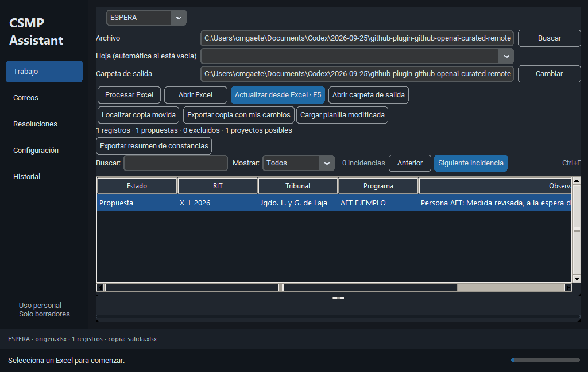
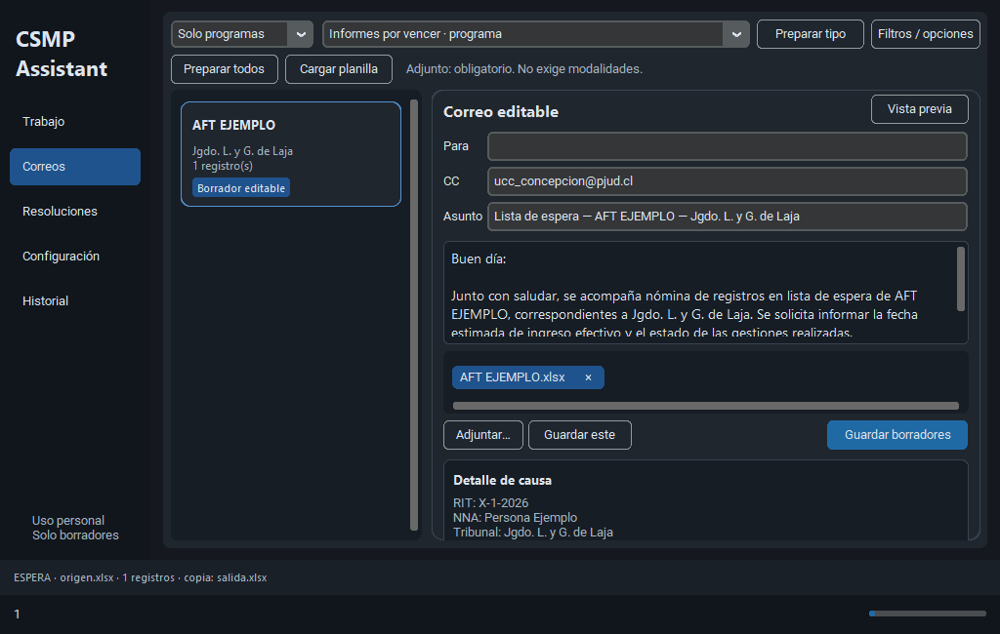
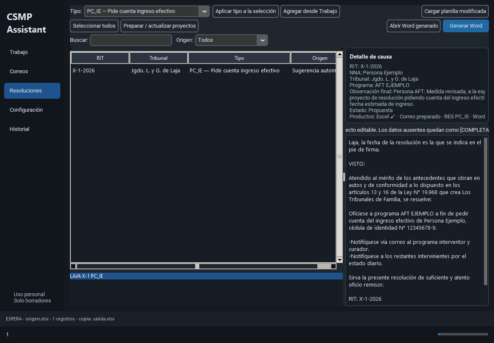

Qué resuelve
Lee copias de Excel, conserva el original, aplica reglas conocidas para Laja, Mulchén y Tomé, y deja productos editables para revisión humana.
Guía visual para descargar registros, analizar Espera/Cumplimiento/Informes, editar observaciones, preparar correos y proyectos Word, y recuperar un lote interrumpido.
Lee copias de Excel, conserva el original, aplica reglas conocidas para Laja, Mulchén y Tomé, y deja productos editables para revisión humana.
CSMP no tiene un lector ni escritor RUS conectado. Las bitácoras y el registro deben revisarse en RUS. La creación del borrador en Outlook también debe comprobarse en la cuenta abierta.
El texto propuesto no prueba que la gestión se haya hecho. Solo una confirmación verificable en RUS debe marcar una observación como registrada.
_internal.Iniciar.cmd y carga la carpeta extension en chrome://extensions con modo desarrollador.CSMP_Integral.exe. La configuración de prueba se guarda en LOCALAPPDATA/CSMP_Personal.No compartas credenciales, códigos de conexión, HAR ni Excel con información personal. El manual describe el flujo local y usa capturas ficticias.
Selecciona el modo, el Excel y la hoja. El asistente conserva la procedencia, muestra el RIT, tribunal, programa, estado y observación, y prioriza las incidencias.

FECHA_OBS, TT, CC y RES.Usa el buscador para RIT, nombre, tribunal o programa. «Con aviso» muestra solo incidencias; «Con resolución» muestra filas con resolución; «Excluidos» conserva la trazabilidad sin incluir la fila en correos.
La pantalla prepara borradores editables. No envía correos automáticamente. Puedes elegir Solo programas, Solo tribunales o Ambos, y aplicar modalidades y tribunales como filtros independientes.

Los proyectos se agrupan por tribunal + RIT + tipo. RES puede indicar PC_IE, PC_INFO o NOMENCL; vacío significa que no corresponde proyecto.

[COMPLETAR …].Si Excel se cerró durante una exportación, el original permanece separado. Corrige el archivo de salida o elige otra carpeta y vuelve a exportar.
Abre Configuración → Básico → Vista. Guarda varias distribuciones con un nombre, aplica una vista guardada o restaura la anterior para deshacer el cambio.
Al cerrar se conservan los filtros, columnas, anchos, fuente y tamaño de ventana. Las selecciones ocultas por el buscador se mantienen en la sesión del trabajo. El archivo de vista guarda preferencias y textos de búsqueda; no contiene las filas del caso.
Comprueba el modo de la hoja, el filtro Solo programas/tribunales, la modalidad, el nombre del tribunal y las exclusiones. Para Mulchén, usa Residencial para RTA/RTT/RVA.
Que el Excel no entregó una fecha de vencimiento, espera o egreso utilizable. Es una alerta para revisar la fuente, no una fecha calculada por el asistente.
No. El código contiene contratos y análisis de bitácora sobre datos proporcionados, pero esta entrega no conecta una sesión RUS para leer, guardar ni confirmar observaciones. No se debe marcar una gestión como realizada ni completar su fecha hasta comprobarla directamente en RUS.
Extrae el ZIP completo en una carpeta nueva y no mezcles el ejecutable con otra carpeta _internal. Si la ventana abre pero parece una versión anterior, revisa Configuración → Avanzado → Diagnóstico: muestra versión, commit, origen y las rutas del ejecutable y del módulo CSMP que se cargó.
La disponibilidad depende de las pantallas y opciones que RUS exponga al descargar. Las reglas históricas de correos y las matrices Word están configuradas solo para Laja, Mulchén y Tomé. La auditoría individual de bitácora para todos los tribunales sigue pendiente de conectar y verificar.
Los productos y diarios se guardan localmente. El descargador no guarda cookies ni contraseñas y los resúmenes no incluyen filtros privados. Trata los Excel y borradores como información reservada.
Conserva el modo, tribunal, nombre de la hoja, hora aproximada, mensaje mostrado y los archivos resumen.json o recibos locales. No incluyas credenciales, códigos de conexión, nombres de niños, RUT ni capturas de una causa real.
La auditoría técnica está en AUDITORIA_COMPLETA_20261005.md. El flujo de pruebas está en GUIA_PRUEBAS_INTEGRALES.md.